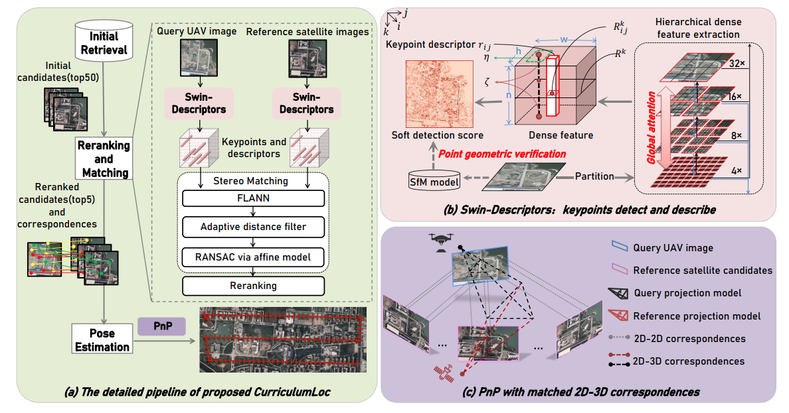
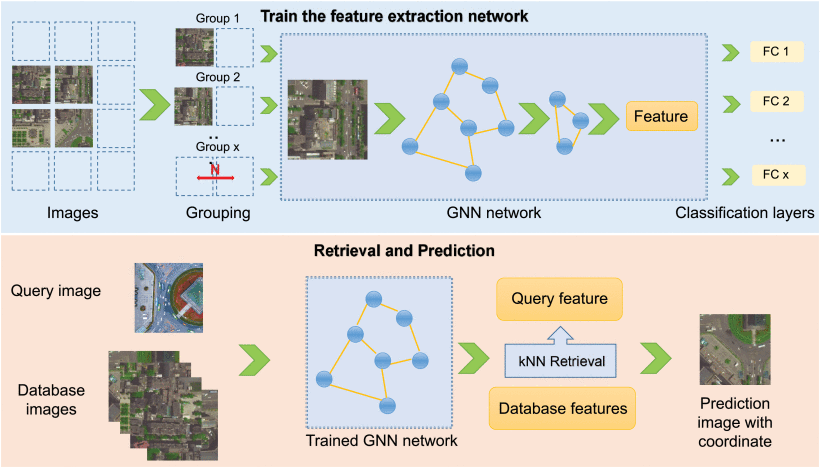
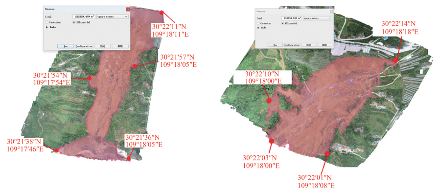
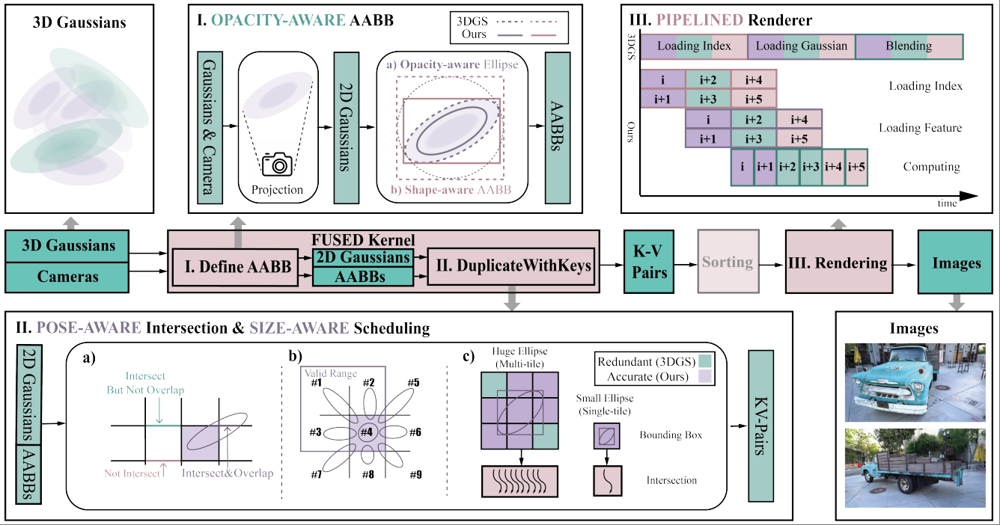
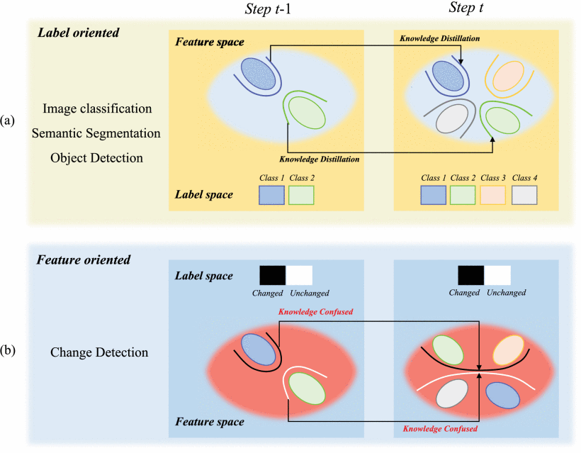

- [02/2025] One paper accepted to CVPR2025 and the code is released.
- [01/2025] One paper accepted to T-ASE.
- [03/2024] One paper accepted to TGRS (IF=8.2) and the code is released.
- [01/2024] One paper accepted to TGRS (IF=8.2).
- [07/2023] One paper accepted to National Remote Sensing Bulletin.
- [07/2023] One paper accepted to TGRS (IF=8.2).
>>>>>>> 4e82afc49feaac4fc6bf1a61e8a705058328a8f2
Contact:
📧 huboni@mail.nwpu.edu.cn
🔗 Linkedin
🌏 Twitter
🏠 Github
OriLoc: Unlimited-FoV And Orientation-Free Cross-View Geolocalization. [Paper]
Boni Hu, Haowei Li, Shuhui Bu, Lin Chen, Pengcheng Han
IEEE Journal of Selected Topics in Applied Earth Observations and Remote Sensing, 2025
CurriculumLoc: Enhancing Cross-Domain Geolocalization Through Multistage Refinement. [Paper] [Code]
IEEE Transactions on Geoscience and Remote Sensing, 2024
Real-Time Dense Point Cloud Generation And Digital Model Construction Of Surface Environment Based On UAV Platform. [Paper]
Boni Hu, Lin Chen, Bingli Xu, Shuhui Bu, Pengcheng Han, Li Kun, Zhenyu Xia, Ni Li, Ke Li, Xuefeng Cao, Gang Wan
National Remote Sensing Bulletin, 2023
G2-Mapping: General Gaussian Mapping For Monocular, RGB-D, And LiDAR-Inertial-Visual Systems. [Paper]
Lin Chen, Boni Hu, Wang Jvboxi, Shuhui Bu, Wang Guangming, Pengcheng Han, Chen Jian IEEE Transactions on Automation Science and Engineering, 2025
GCG-Net: Graph Classification Geolocation Network. [Paper]
Yu Zhang, Shuhui Bu, Boni Hu, Pengcheng Han, Lean Weng, Shaocheng Xue IEEE Transactions on Geoscience and Remote Sensing, 2023
MDINet: Multi-Domain Incremental Network For Change Detection. [Paper]
Lean Weng, Wengqing Wang, Boni Hu, Pengcheng Han, Shaocheng Xue, Yu Zhang, Haowei Li, Jie Jin, Shuhui BuIEEE Transactions on Geoscience and Remote Sensing, 2024
Towards Efficient Pre-Training: Exploring FP4 Precision In Large Language Models. [Paper]
Jiecheng Zhou, Ding Tang, Rong Fu, Boni Hu, Haoran Xu, Yi Wang, Suzhongling, Liang Liu, PeiZhilin, Hengjie Li, Xingcheng Zhang, Weiming Zhang
ES-FoMo III: 3rd Workshop on Efficient Systems for Foundation Models, ICML, 2025
FlashGS: Efficient 3D Gaussian Splatting For Large-Scale And High-Resolution Rendering. [Paper]
Guofeng Feng, Siyan Chen, Rong Fu, Zimu Liao, Yi Wang, Tao Liu, Boni Hu, Linning Xu, Zhilin Pei, Hengjie Li, Xiuhong Li, Ninghui Sun, Xingcheng Zhang, Bo Dai
Proceedings of the Computer Vision and Pattern Recognition Conference, 2025
IVU-AutoNav: Integrated Visual And UWB Framework For Autonomous Navigation. [Paper]
Shuhui Bu, Jie Zhang, Xiaohan Li, Kun Li, Boni Hu
Drones, vol. 9, no. 3, 2025
3D Reconstruction Of Deformable Colon Structures Based On Preoperative Model And Deep Neural Network. [Paper]
IEEE International Conference on Robotics and Automation (ICRA), 2021
Deep Learning Assisted Automatic Intra-Operative 3D Aortic Deformation Reconstruction. [Paper]
Medical Image Computing and Computer Assisted Intervention–MICCAI, 2020
Research Experience
- Advanced Neuro Symbolic Learning and Reasoning 2025 - Now
- Visual Geolocalization and Place Recognition on Remote Sensing 2021 - 2025
- Medical Image Processing & 3D Computer Vision 2019 - 2021
Academic Experience
Reviewer for:
- IEEE Transactions on Geoscience and Remote Sensing
- International Conference on Pattern Recognition (ICPR)
- IEEE International Conference on Robotics and Automation (ICRA)
- European Conference on Computer Vision (ECCV)
- IEEE/RSJ International Conference on Intelligent Robots and Systems (IROS)
- IEEE Transactions on Circuits and Systems for Video Technology
Selected Honors
- National Outstanding Doctoral Dissertation by China Education Society of Electronics (CESE, Nomination Award)
- OUTSTANDING GRADUATE of Northwestern Polytechnical University.
- National Scholarship (2 times), Top 2%.
- Second Prize of National Mathematical Modeling Contest.
<<<<<<< HEAD
=======
|
Place Recognition/Geolocalization for UAV Platforms
|
|

|
CurriculumLoc: Enhancing Cross-Domain Geolocalization Through Multistage Refinement
Boni Hu,
Lin Chen,
Runjian Chen,
Shuhui Bu,
Pengcheng Han,
Haowei Li
IEEE Transactions on Geoscience and Remote Sensing, 2024
IEEE paper
/
code
Inspired by curriculum design, human learn general knowledge first and then delve into professional expertise. We
first recognized semantic scene and then measured geometric structure, involving a delicate design of multistage
refinement pipeline and a novel keypoint detection and description with global semantic awareness and local
geometric verification, resulting in a practical visual geolocalization solution.
|
|

|
Gcg-net: Graph classification geolocation network
Yu Zhang,
Shuhui Bu,
Boni Hu,
Pengcheng Han,
Lean Weng,
Shaocheng Xue
IEEE Transactions on Geoscience and Remote Sensing, 2023
IEEE paper
We designed a graph neural network (GNN) as the feature extraction network, and constructed a training framework
based on image classification with a special data grouping strategy. Results demonstrate the
effectiveness of our approach for UAV visual geolocation, especially for large scale applications.
|
|

|
Real-time dense point cloud generation and digital model construction of surface environment based on UAV platform
Boni Hu,
Lin Chen,
Bingli Xu,
Shuhui Bu,
Pengcheng Han,
Kun Li,
Zhenyu Xia,
Ni Li,
Ke Li,
Xuefeng Cao,
Gang Wan
National Remote Sensing Bulletin, 2023
paper
Our proposed geolocalization method is utilized for dense point cloud generation and digital model construction
to survey washed-out and sediment areas, determining their location and extent accurately.
|
|
Gaussian Splatting for Reconstruction
|

|
G²-Mapping: General Gaussian Mapping for Monocular, RGB-D, and LiDAR-Inertial-Visual Systems
Lin Chen,
Boni Hu,
Jvboxi Wang,
Shuhui Bu,
Guangming Wang,
Pengcheng Han,
Jian Chen
IEEE Transactions on Automation Science and Engineering, 2025
IEEE paper
we introduce G2-Mapping, a novel method to comprehensively support online monocular, RGB-D, and LiDAR-Inertial-Visual systems, employing 3D gaussian points as scene representation.
|
|

|
FlashGS: Efficient 3D Gaussian Splatting for Large-scale and High-resolution Rendering
Guofeng Feng,
Siyan Chen,
Rong Fu,
Zimu Liao,
Yi Wang,
Tao Liu,
Boni Hu,
Linning Xu,
Zhilin Pei,
Hengjie Li,
Xiuhong Li,
Xingcheng zhang,
Bo Dai,
Proceedings of the IEEE Conference on Computer Vision and Pattern Recognition (CVPR), 2025
Project page
We proposed FlashGS, an open-source CUDA library with Python bind, with comprehensive algorithm design and optimizations, encompassing redundancy elimination, adaptive scheduling, and efficient pipelining.
|
|
Change Detection for UAV Platforms
|
|

|
MDINet: Multi-Domain Incremental Network for Change Detection
Lean Weng,
Wengqing Wang,
Boni Hu,
Pengcheng Han,
Shaocheng Xue,
Yu Zhang,
Haowei Li,
Jie Jin
Shuhui Bu
IEEE Transactions on Geoscience and Remote Sensing, 2024
IEEE paper
We proposed a domain residual module, CD-DRU, decomposes the feature space into domain-specific and domain-shared
parameters. This effectively mitigates catastrophic forgetting and outperforming existing Incremental Learning
methods and state-of-the-art Change Detection techniques in remote sensing.
|
|
3D Reconstruction for Surgical Environment
|

|
3D Reconstruction of Deformable Colon Structures based on Preoperative Model and Deep Neural Network
Shuai Zhang,
Liang Zhao,
Shoudong Huang,
Ruibin Ma,
Boni Hu,
Qi Hao,
IEEE International Conference on Robotics and Automation (ICRA 2021)
IEEE Paper
We utilized a preoperative colon model segmented from CT scans together with the colonoscopic images to achieve
the 3D colon reconstruction, including dense depth estimation from monocular colonoscopic images using a deep
neural network.
|
- Reviewer of IEEE Transactions on Geoscience and Remote Sensing, ICPR, ICRA, ECCV, IROS, IEEE Transactions on Circuits and Systems for Video Technology.
>>>>>>> 4e82afc49feaac4fc6bf1a61e8a705058328a8f2
|

{kind=link}